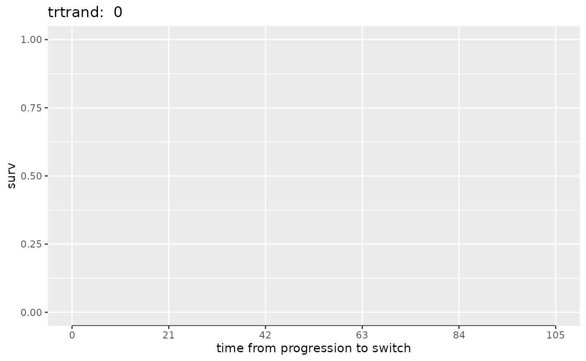
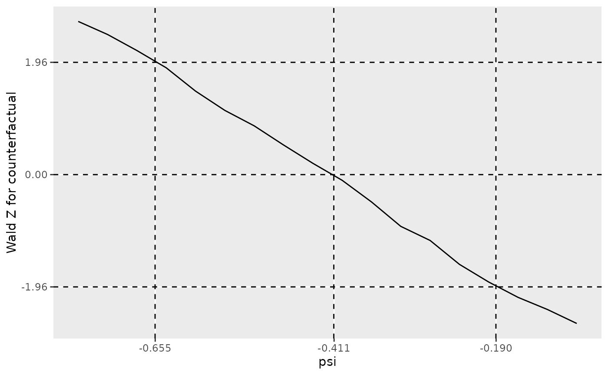

Introduction
TSEgest is an extension of the simple two-stage estimation (TSE) method by incorporating a structural nested model (SNM) and utilizing g-estimation. This allows a delay between disease progression (secondary baseline) and treatment switch, provided that time-dependent confounding variables that predict switching and survival are measured beyond the secondary baseline and included in the model for treatment switching. One key assumption for the TSEgest method is no unmeasured confounding, i.e., switching is independent of potential outcomes conditional on measured variables.
Estimation of \(\psi\)
To derive the g-estimate of \(\psi\), we utilize a logistic regression model for switching \[ \textrm{logit}(p(E_{ik})) = \alpha U_{i,\psi} + \sum_{j} \beta_j x_{ijk} \] alongside a structural model for counterfactual post progression survival times \[ U_{i,\psi} = T_{C_i} + e^{\psi}T_{E_i} \] Here \(T_{C_i}\) refers to the time spent after disease progression on control treatment, and \(T_{E_i}\) refers to the time spent after disease progression on the experimental treatment.
Key Components
-
Switch Indictor \(E_{ik}\): This variable indicates whether subject \(i\) switched treatment at observation \(k\), starting from the secondary baseline up to and including the time of treatment switching. The secondary baseline visit corresponds to the first observation \((k=1)\) in the logistic regression model.
If a patient switches treatment two visits after disease progression, they contribute three records to the switching model: \(E_{i1} = 0\), \(E_{i2} = 0\), and \(E_{i3} = 1\).
If a patient does not switch treatment and either dies or is censored four visits after disease progression, they contribute five records, with \(E_{ik} = 0\) for \(k=1,\ldots,5\).
Confounders \(x_{ijk}\): These are the confounding variables measured for subject \(i\) at observation \(k\). Visit-specific intercepts can be modeled using a natural cubic spline with specified degrees of freedom, denoted as \(\nu\) (corresponding to the
ns_dfparameter of thetsegestfunction). The boundary and internal knots can be based on the range and percentiles of observed treatment switching times, respectively. Here, \(\nu\) equals the number of internal knots plus one; a value of \(\nu=0\) indicates a common intercept, while \(\nu=1\) leads to a linear effect of visit. By default, \(\nu=3\), which implies two internal knots for the cubic spline.Counteractual Survival Time \(U_{i,\psi}\): This represents the counterfactual post progression survival time for subject \(i\) based on a specific value of \(\psi\). In case of recensoring, we define \(D_{i,\psi}^* = \min(C_i, e^{\psi}C_i)\), where \(C_i\) is the censoring time for the subject. Additionally, we denote \(\Delta_i\) as the observed event indicators. We then define \(U_{i,\psi}^* = \min(U_{i,\psi}, D_{i,\psi}^*)\) and \(\Delta_{i,\psi}^* = \Delta_i I(U_{i,\psi} \leq D_{i,\psi}^*)\) to represent the recensored counterfactual survival times and event indicators, respectively. Next, we fit a null Cox model to the dataset \((U_{i,\psi}^*, \Delta_{i,\psi}^*)\) to patients with disease progression. The martingale residuals from this model are then used to replace \(U_{i,\psi}\) in the pooled logistic regression switching model.
Estimation of Hazard Ratio
Once \(\psi\) has been estimated, we can derive an adjusted data set and fit a (potentially stratified) Cox proportional hazards model to the adjusted data set to obtain an estimate of the hazard ratio. The confidence interval for the hazard ratio can be derived by bootstrapping the entire adjustment and subsequent model-fitting process.
Example
We start by preparing the data.
sim1 <- tsegestsim(
n = 500, allocation1 = 2, allocation2 = 1, pbprog = 0.5,
trtlghr = -0.5, bprogsl = 0.3, shape1 = 1.8,
scale1 = 360, shape2 = 1.7, scale2 = 688,
pmix = 0.5, admin = 5000, pcatnotrtbprog = 0.5,
pcattrtbprog = 0.25, pcatnotrt = 0.2, pcattrt = 0.1,
catmult = 0.5, tdxo = 1, ppoor = 0.1, pgood = 0.04,
ppoormet = 0.4, pgoodmet = 0.2, xomult = 1.4188308,
milestone = 546, seed = 2000)Next we apply the TSE method with g-estimation.
data1 <- sim1$paneldata %>%
mutate(visit7on = ifelse(progressed == 1, tstop > timePFSobs + 105, 0))
fit1 <- tsegest(
data = data1, id = "id",
tstart = "tstart", tstop = "tstop", event = "event",
treat = "trtrand", censor_time = "censor_time",
pd = "progressed", pd_time = "timePFSobs",
swtrt = "xo", swtrt_time = "xotime",
base_cov = "bprog",
conf_cov = c("bprog*cattdc", "timePFSobs", "visit7on"),
ns_df = 3, recensor = TRUE, admin_recensor_only = TRUE,
swtrt_control_only = TRUE, gridsearch = FALSE,
alpha = 0.05, ties = "efron",
tol = 1.0e-6, offset = 0, boot = FALSE)The Kaplan-Meier plot for the control arm demonstrates that treatment switching can occur at the secondary baseline and at each of the ensuing five scheduled visits, spaced 21 days apart.
switched <- fit1$data_switch[[1]]$data %>% filter(swtrt == 1)
table(switched$swtrt_time)
#>
#> 0 21 42 63 84 105
#> 13 9 28 8 20 8
ggplot(fit1$km_switch[[1]]$data %>% filter(nevent > 0),
aes(x=time, y=surv)) +
geom_step() +
scale_y_continuous(limits = c(0,1)) +
scale_x_continuous(breaks = seq(0,105,21)) +
xlab("time from progression to switch") +
ggtitle(paste("trtrand: ", fit1$km_switch[[1]]$trtrand)) +
theme(panel.grid.minor.x = element_blank())
We can examine the logistic regression switching model to confirm that the coefficient associated with the counterfactual survival time (the martingale residuals for the null Cox model) is effectively zero. To account for the potential correlation of multiple observations within a subject, a robust sandwich variance estimator is employed, clustering on the subject level for the logistic regression model.
parest <- fit1$fit_logis[[1]]$fit$parest
parest[, c("param", "beta", "sebeta", "z")]
#> param beta sebeta z
#> 1 (Intercept) -2.773781e+00 6.749240e-01 -4.109767e+00
#> 2 counterfactual -2.108783e-04 1.967432e-01 -1.071845e-03
#> 3 bprog 6.417353e-01 4.022606e-01 1.595322e+00
#> 4 cattdc 2.242257e+00 5.173334e-01 4.334259e+00
#> 5 timePFSobs 5.976563e-04 5.564973e-03 1.073961e-01
#> 6 visit7on -1.735870e+01 7.530624e-07 -2.305081e+07
#> 7 bprog.cattdc 1.255630e-01 5.556276e-01 2.259841e-01
#> 8 ns1 -1.146042e+00 1.325413e+00 -8.646677e-01
#> 9 ns2 -1.385858e+00 2.578798e+00 -5.374044e-01
#> 10 ns3 -1.598949e+00 2.538037e+00 -6.299945e-01The plot of \(Z(\psi)\) versus \(\psi\) shows that the estimation process worked well.
c(fit1$psi, fit1$psi_CI)
#> [1] -0.4113644 -0.6551811 -0.1902263
psi_CI_width <- fit1$psi_CI[2] - fit1$psi_CI[1]
ggplot(fit1$eval_z[[1]]$data %>%
filter(psi > fit1$psi_CI[1] - psi_CI_width*0.25 &
psi < fit1$psi_CI[2] + psi_CI_width*0.25),
aes(x=psi, y=Z)) +
geom_line() +
geom_hline(yintercept = c(0, -1.96, 1.96), linetype = 2) +
scale_y_continuous(breaks = c(0, -1.96, 1.96)) +
geom_vline(xintercept = c(fit1$psi, fit1$psi_CI), linetype = 2) +
scale_x_continuous(breaks = round(c(fit1$psi, fit1$psi_CI), 3)) +
ylab("Wald Z for counterfactual") +
theme(panel.grid.minor = element_blank())
Now we fit the outcome Cox model and compare the treatment hazard ratio estimate with the reported.
fit1$fit_outcome$parest[, c("param", "beta", "sebeta", "z")]
#> param beta sebeta z
#> 1 treated -0.6010489 0.09855810 -6.098422
#> 2 bprog 0.4452963 0.09119586 4.882856
c(fit1$hr, fit1$hr_CI)
#> [1] 0.5482363 0.4519340 0.6650596Finally, to ensure the uncertainty is accurately represented, the entire adjustment process and subsequent survival modeling can be bootstrapped.
```{r boot}
fit2 <- tsegest(
data = data1, id = "id",
tstart = "tstart", tstop = "tstop", event = "event",
treat = "trtrand", censor_time = "censor_time",
pd = "progressed", pd_time = "timePFSobs",
swtrt = "xo", swtrt_time = "xotime",
base_cov = "bprog",
conf_cov = c("bprog*cattdc", "timePFSobs", "visit7on"),
low_psi = -2, hi_psi = 2, n_eval_z = 101,
ns_df = 3, recensor = TRUE, admin_recensor_only = TRUE,
swtrt_control_only = TRUE, gridsearch = FALSE,
alpha = 0.05, ties = "efron",
tol = 1.0e-6, offset = 0, boot = TRUE,
n_boot = 1000, seed = 12345)
c(fit2$hr, fit2$hr_CI)
```